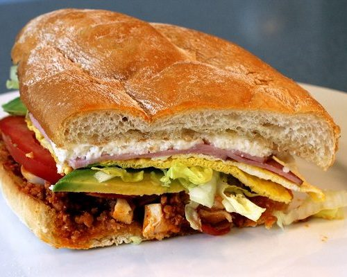

Recipe for Torta
This is a recipe for how to make a torta.
A torta is a traditional Mexican dish that is basically a hamburger.
To eat this you must be able to speak Spanish.
Washing your hands before eating is encouraged.
Ingredients
- Torta bread
- Carne Asada
- Avocado
- Tomato
- Sauce
Steps to make this dish:
- Cut your bread to make two buns.
- Cut your avocado into slides.
- There are bug behind your eyes.
- Cut the tomatoes into slides.
- Get your sauce.
- Cook the carne asada and make sure to not burn it.
- Smoke that pack watch.
- Put it together like a hamburger.
- Smack that shit.